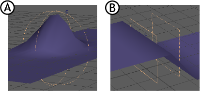

在“基本体衰减”(Primitive Falloff)的“属性编辑器”(Attribute Editor)构件部分，您可以调整各种衰减设置。
访问“基本体衰减”(Primitive Falloff)的“属性编辑器”(Attribute Editor)构件
- 基本体
-

可以选择球体或平面作为衰减对象。形状类型控制衰减的行为。选择“球体”(Sphere)(B) 可实现从球体中心到其外边缘的衰减，选择“平面”(Plane)(A) 可获得二维衰减效果。使用平面衰减对象时，衰减效果出现在两个平面之间的空间中。
- 使用原始几何体(Use Original Geometry)
- 使用原始几何体作为几何体的影响物。
- 请参见原始几何体。
- 正大小(Positive Size)/负大小(Negative Size)
- 用于定义衰减效果的尺寸，反映在基本体形状中。
- 开始(Start)/结束(End)
- 用于定义衰减效果的开始和结束，反映在基本体形状中。
渐变(Ramp)
选择用于衰减的衰减方法。此渐变构件是标准 Maya 渐变工具。有关此工具的信息，请参见使用渐变设置属性
使用衰减和渐变时，请记住，渐变形状表示对变形效果的衰减影响。
渐变之前和之后的值与渐变的开始值和结束值保持相等。例如，当渐变值从 0.3 开始时，Maya 假定在渐变效果之前出现的几何体处于 0.3。